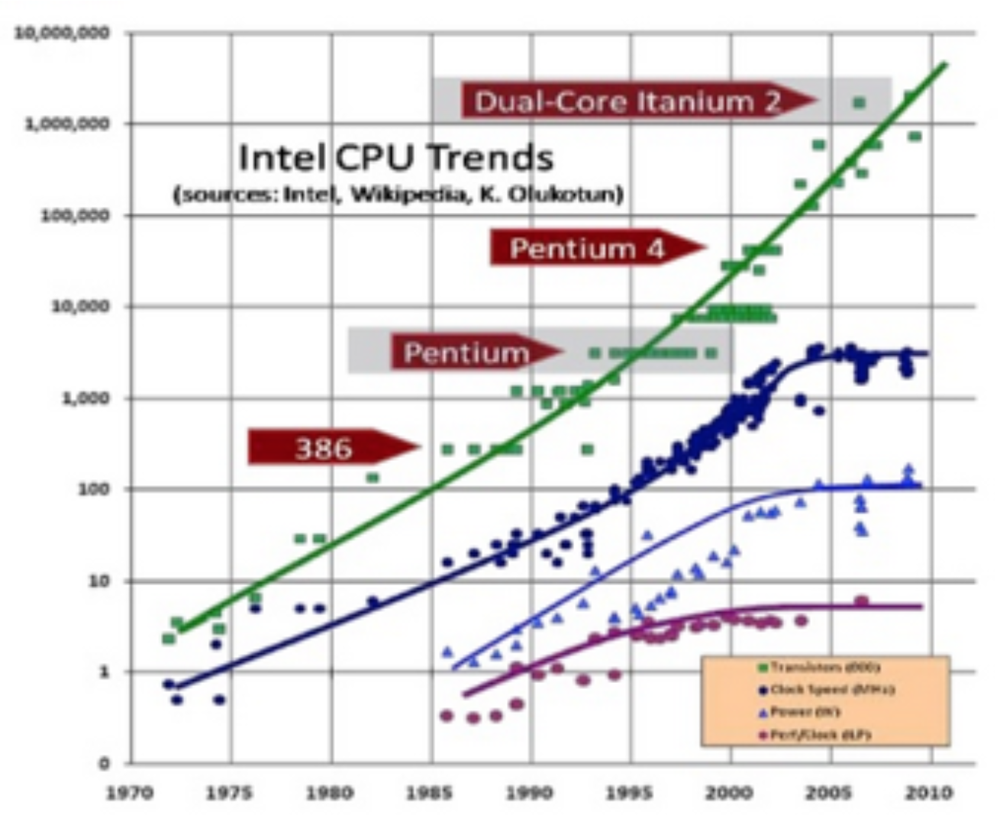
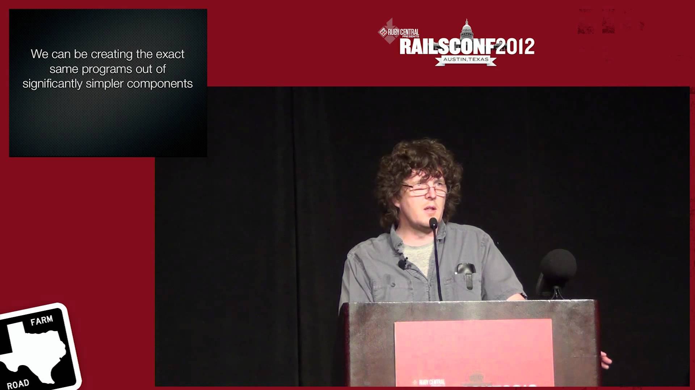
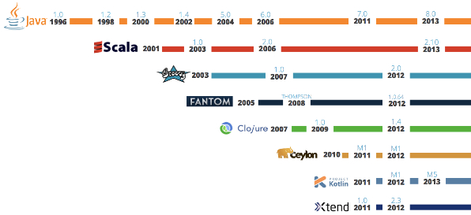
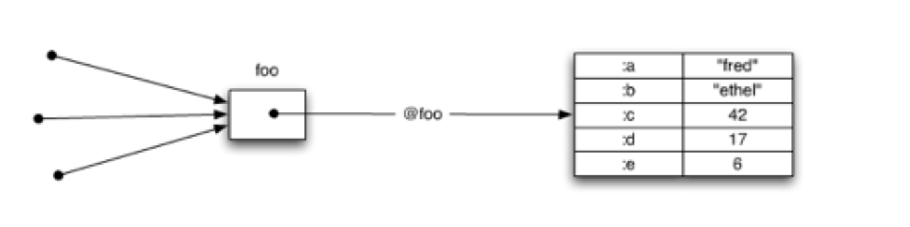

функциональное программирование и Clojure
Андрей Бутов
Один интересный курс по программированию начинается так
Structure and interpretation of computer programs
Информационная система
- Информация - данные, факты, нечто действительное (в определенном контексте)
- Система - нечто, составленное из частей, образующее целое
- Информационная система - набор механизмов, помогающих организовать и анализировать информацию
Что будет, если логически отделить информацию от механизмов ее использования?
Функциональное программирование
- Информация - структуры данных
- Механизмы использования информации - функции
- Программа – набор функций
- Функции определяются как композиция других функций
- ВСЕ функции возвращают значение, даже те, которые использовались для side-эффектов
- Нет различия между statement и вызовом функции
- Использование функций высшего порядка
- И, наконец, гомоиконность: код - это данные, а данные - это код (LISP)
С чего все началось
Попытка создания ИИ
Джон Маккарти - создатель языка LISP и исследователь в сфере ИИ
LISP – один из самых старых высокоуровневых языков программирования (см. также Алгол-58)
Немного истории ИИ
- Расцвет ИИ и восторженный оптимизм в начале 60-х
- Epic fail: "The spirit is willing but the flesh is weak"
- Пессимизм 70-х
- Прагматичный оптимизм с середины 90-х
- Как следствие, сейчас не принято называть работающую технологию ИИ
Почему LISP не очень популярен
Доводы из шестидесятых-восьмидесятых:
- Далек от железа, использует сборщик мусора => низкая производительность
- Большой размер среды выполнения
- Область применения часто ограничивалась исследовательскими разработками
- Перегруженная семантика скобок для вызовов и группировки
Большинство этих факторов почти не актуальны
Зато в наличии:
- Сборка мусора
- Интерактивная разработка
- Гомоиконность => макросы как средство абстракции
- Простой синтаксис
Почему функциональное программирование переживает подъем в последние 5-10 лет?
Причина подъема ФП №1: Физика процесса

С точки зрения производителя железа
С точки зрения программиста
- Необходимо писать concurrent программы
- Нужно выбирать: защитное копирование или блокировки
- Сложно доказать корректность работы программы с ручным управлением блокировками
- Отладка становится слишком сложной
Императивное программирование
- ООП инкапсулирует состояние
- Любое изменение объекта изменяет его состояние
- За состоянием объекта следят несколько наблюдателей
- В многопоточной среде это требует блокировок
- Для написания корректной concurrent программы требуются опыт и внимательность
- Сложно тестировать и доказать корректность
Функциональное программирование
- Неизменяемость данных и отсутствие скрытого состояния
- Проще писать, сопровождать и тестировать код
- Хорошо подходит для написания компиляторов
- Всего лишь абстракция
- Требует компромиссов в реальном мире
Причина подъема ФП №2: "Просто и сложно"
У каждого есть свой предел
Сложную программу сложно отлаживать
Скорость разработки: в начале и середине дистанции
Рич Хики – создатель Clojure
Разработчик на c++/c#/java/clojure

Зачем еще один JVM-язык?
Clojure:

Интерактивный
Функциональный
Динамически типизированный
LISP :)
Поддержка concurrency
Работает в ВМ (JVM, CLR, JS), а не ОС
В Clojure состояние отделено от времени
Состояние - это значение идентичности в момент времени
А как же производительность?
- Неизменяемые структуры данных
- Переходные данные
- Программная транзакционная память
- Чтение данных никогда не требует блокировок
Информация/значения
- (list 1 2 3)
- [1 2 3]
- {:name “Rich” :surname “Hickey”}
- #{:left :right}
- (def x ‘(1 2 3));;связали список с x
- (conj x 0);;вызов функции, возвращающий новое значение списка '(0 1 2 3)
Механизмы использования/функции
- (defn square[x] (* x x))
- (map (fn [x] (* x x)) (range 1 11))
- (def f (comp inc (fn [x](* x x))))
- (= 10 (f 3))
Инкапсуляция в многопоточной среде?
Java

Clojure 
Механизмы изменения состояния
- Atoms – синхронные нескоординированные
- Refs – синхронные скоординированные
- Agents – асинхронные нескоординированные
Так меняют состояние в Clojure
- (def x (atom {}))
- (swap! x assoc “clojure” “is awesome”)
- (def x1 (ref 0))
- (def x2 (ref 0))
- (dosync (alter x1 inc) (alter x2 dec))
- (def a (agent 0))
- (send a inc)
- (deref a)
Кто использует Clojure?
Темная сторона Clojure
- Смена парадигмы => сложно найти разработчиков
- Возможно, все курские разработчики на Clojure находятся в этой комнате :)
- Хороший инструментарий (Emacs) требует изучения
- Унаследованный код
И что мы с этим сделаем?
- Смена парадигмы => давайте попробуем что-то новое, учиться всегда полезно, даже если вы (пока) не планируете это использовать!
- Тогда, возможно, количество разработчиков на Clojure в этой комнате увеличится :)
- Изучение Lisp/Clojure сильно помогает в работе с Emacs, но начать можно и с LightTable, параллельно разбираясь с Emacs
- Унаследованный код => написать простой некритичный сервис к существующей системе
Что делать дальше?
Доклады Рича Хики:
- Simple made easy (infoq.com)
- The value of values (infoq.com)
Инструменты:
- Emacs+cider+leiningen
- Ring(http-kit)/Compojure/Liberator/Cheshire
- Core.async/Core.logic/Overtone/Quil
- Incanter/PigPen/Cascalog
- Transducers!
- Clojurescript!
И, наконец, lein new hello-world